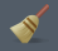

Muddy Points
1. Disjoint vs. Independent Events
Here is a pretty good video breaking down disjoint (mutually exclusive) events and independent events. It includes examples as well.
Basically, mutually exclusive events do not share any probability space! Aka the probability of both events is 0. Both cannot happen at the same time. Independent events can happen at the same time!
2. How do I know if two events are independent?
My main piece of advice for independence is to rely on the math to show it, not logic! Don’t go into a problem thinking “Logically, these two events are independent.” If the problem does not say “Assume independence,” then we need to show it mathematically. (For example, the math holds for the two dice even though I don’t explicitly write it down.)
Same goes with the definition of independence. When we say “knowing the outcome of one provides no information about the outcome of the other,” we once again need to show this mathematically, not just using logic. We will discuss this in Lesson 4: Conditional Probability, where we translate the previous statement to \[P(A) = P(A|B)\] And we need to show this mathematically!
3. Medication example (and Venn Diagram)
Please follow this link for my work through of the example. And here is the PDF with my work.
- Note that I make some references that are specific to a different class that I teach
- I reference chapter 3, which is just a chapter on independent events
- I also reference certain “axioms.” I think I explain most of the actual rules of the axioms.
Sub-question: why don’t we just multiply the probability of A and B to get the intersection? This is a specific property of probability when A and B are independent. Only when A and B are independent can we conclude that \(P(A \cap B) = P(A)P(B)\).
4. For R, if we don’t “y=6” anymore, how do we remove that?
There are a couple ways to remove y=6 from your saved R objects.
- You can use the command
rm(y). If you check the Envioronment, it should be gone! - You can also use the little broom/sweeping icon  in the Environment to clear out ALL your saved objects. Just note, that everything will be erased with this option.
- You can also reassign
yto anything else and it will overwrite your previous assignment